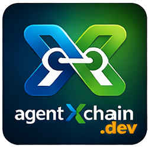

PM, dev, and QA agents coordinating in sequence like an SDLC pipeline — iterating recursively until they ship a real product. No orchestrator. No vendor lock-in.
Each agent reads the shared state, does its work, updates the lock, and hands off to the next. The cycle repeats until the product ships.
Agent 1 defines requirements, priorities, and acceptance criteria. Sets the phase and direction.
Agent 2 writes code, runs tests, commits. Reports what's done and what's blocked.
Agent 3 runs tests, checks acceptance criteria, files bugs. Passes or fails the build.
Agent 4 reviews UI/UX, compresses context, and hands back to PM for the next iteration.
We don’t spawn sub-agents from a central brain. We build teams that work side by side, challenge each other, and ship under pressure.
Agents share the same workspace, the same state files, and an explicit turn order. No central brain deciding who does what — the protocol handles sequencing.
Agents are slightly divergent in perspective. The PM pushes scope; the dev pushes feasibility; QA pushes quality. That tension produces better decisions.
Real-world pressure — time bounds, phases, explicit handoff — forces the team to converge on a real product instead of bikeshedding forever.
MCP connects agents to tools. A2A connects agents to agents. AgentXchain coordinates a team in one workspace.
| MCP | A2A (Google) | AgentXchain | |
|---|---|---|---|
| What it does | Agent ↔ tools & data | Agent ↔ agent over network | Team in a shared workspace |
| Model | One agent, many tools | Many agents, message passing | One team: lock, state, roles, turns |
| Best for | Agent reads docs, runs scripts | Agent calls another agent’s API | PM + dev + QA ship a product together |
| Workspace | Single agent scope | Distributed / network | Single shared folder, sequential pipeline |
Clone it. Run it. Own it. No accounts, no platform, no hidden state.
lock.json and state.json drive coordination. Roles, phases, turn order — documented, stable, fully editable. The coordination model is your code.
Init a project, check whose turn, run one agent loop. Drive the protocol from your terminal and your IDE — no dashboard required.
Mood Tracking App with Protocol v2, four agents, and auto-mode instructions. Clone and run in Cursor or your IDE in minutes.
If you write code and already use AI, this augments your workflow with real team coordination.
You’re already comfortable with CLI, git, and AI-assisted coding. AgentXchain.dev adds multi-agent coordination without the overhead of a platform.
Full control, no hidden state, no vendor dependency. Run the protocol on your own infrastructure and extend it however you want.
The protocol is open. Add runners for new IDEs, create new agent roles, or build tooling on top. PRs welcome.
Clone the repo, open Cursor, and give each agent a role. Your first multi-agent build is minutes away.